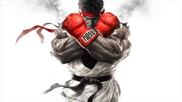
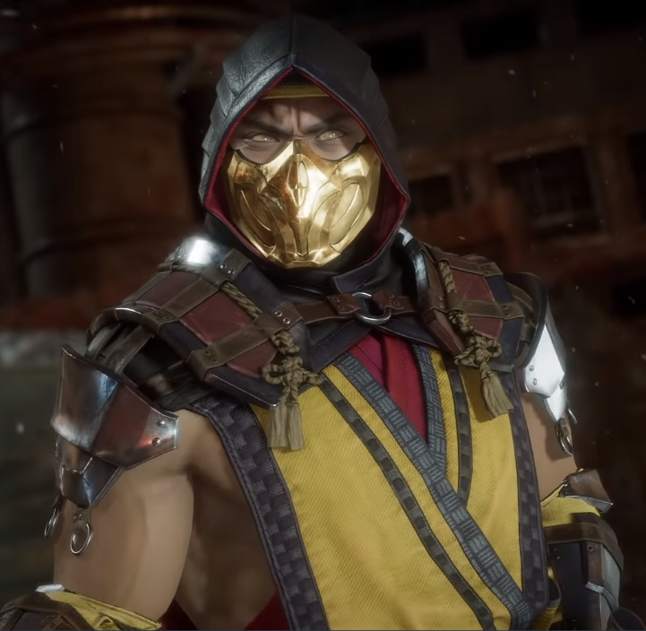

STREET FIGHTER
COMBOS
RYU

- Hadouken: baixo até frente + soco
- Shoryuken (dragon punch): frente, baixo, frente + soco
- Hurricane Kick: baixo, diagonal inferior trás, trás + chute
- Air Hurricane Kick: (no ar) baixo, trás + chute
- Fire Hadoken: trás, diagonal inferior trás, baixo, diagonal inferior frente, frente + soco
- Shinkuu Hadouken (especial): baixo até frente duas vezes + soco
KEN
.jpeg)
- Hadouken: baixo até frente + soco;
- Shoryuken (dragon punch): frente, baixo, frente + soco;
- Hurricane Kick: baixo, diagonal inferior trás, trás + chut
- Air Hurricane Kick: (no ar) baixo, trás + chute;
- Um chute diferente: baixo até frente + chute (se ficar segurando chute durante este golpe, ainda sai outro chute diferente);
- Um outro chute diferente: frente baixo + chute (se ficar segurando chute durante este golpe, ainda sai outro chute diferente);
- Shouryuu Reppa (especial): baixo, frente, baixo, frente + soco.
BLANKA
.jpeg)
- Electric Thunder: aperte soco varias e repetidas vezes
- Rolling Attack: segure trás e solte apertando pra frente + soco
- Vertical Rolling: segure baixo e solte pra cima + chute
- Backstep Rolling: segure trás e solte apertando pra frente + chute
- Surprise Forward: frente + os 3 chutes
- Surprise Back: trás + os 3 chutes
- Ground Shave Rolling (especial): segure trás, depois solte pra frente, trás, frente + soco segurando soco
CHUN LI
.jpeg)
- Sankaku Tobi: pule contra o canto da parede e aperte na direção oposta
- Yousou Kyaku: no ar, baixo + chute médio;
- Kaku Kyaku Raku: no ar, diagonal inferior frente + chute alto
- Spinning Bird Kick: baixo + cima + chute;
- Spinning Bird Kick (apenas Steet Fighter 2 Turbo): segure trás, solte pra frente + chute;
- Hyakuretsu Kyaku: aperte chute várias vezes;
- Kikouken (apenas Steet Fighter 2 Turbo e a versão de Mega Drive): trás até frente + soco;
- Kikouken: segure trás, solte pra frente + soco;
- Kuuchuu Spinning Bird Kick: no ar, segure trás, solte pra frente + chute;
- Tenshou Kyaku: baixo, cima + chute;
- Senretsu Kyaku (especial): segure trás, depois solte pra frente, trás, frente + chute.
mortal kombat